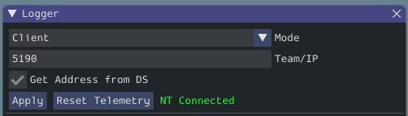
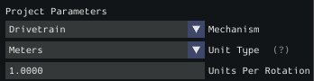
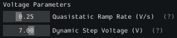
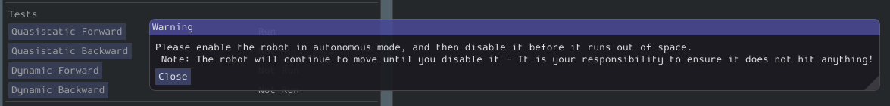
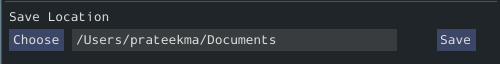

Running the Identification Routine
Once the code has been deployed, we can now run the system identification routine, and record the resulting data for analysis.
Note
Ensure you have sufficient space around the robot before running any identification routine! The drive identification requires at least 10’ of space, ideally closer to 20’. The robot drive can not be accurately characterized while on blocks.
Connect to the Robot
Next, we must connect to the robot. Select “Client” at the top of the Logger window and enter your team number. To characterize a simulated robot program, you can type in localhost. Finally, press the Apply button. The NetworkTables connection indicator will be visible next to the Apply button.
If the tool does not seem to be successfully connecting, try rebooting the robot. Eventually, the status should change to NT Connected, indicating the tool is successfully communicating with the robot.
Project Parameters
Mechanism controls what data is sampled and how gravity is expected to affect the analysis.
Unit Type is the units you are using and the units that SysID will export the gains in.
Units Per Rotation defines anything that affects the change from rotations of the output shaft to the units selected above. As an example say you are using a KOP chassis and units of meters. The gearing is already accounted for in the generator. We have to take into account how our wheel will change the distance we have traveled per rotation. The standard chassis has 6” (0.1524 meters) diameter wheels, so to get the circumference we need to multiply by Pi. The calculation looks like:
Voltage Parameters
Quasistatic Ramp Rate controls how quickly the voltage will ramp up during the quasistatic tests. The goal here is to get the voltage ramped up enough that a trend emerges. If the amount of space you have to run the robot is small you might need to slightly increase this ramp rate.
Dynamic Step Voltage is the voltage that will be applied immediately on start to determine how your robot accelerates. If your robot is short on space you should slightly reduce the voltage.
Running Tests
A standard motor identification routine consists of two types of tests:
Quasistatic: In this test, the mechanism is gradually sped-up such that the voltage corresponding to acceleration is negligible (hence, “as if static”).
Dynamic: In this test, a constant ‘step voltage’ is given to the mechanism, so that the behavior while accelerating can be determined.
Each test type is run both forwards and backwards, for four tests in total, corresponding to the four buttons.
The tests can be run in any order, but running a “backwards” test directly after a “forwards” test is generally advisable (as it will more or less reset the mechanism to its original position).
Follow the instructions in the pop-up windows after pressing each test button.
Track Width
You can determine the track width of the robot by selecting the Drivetrain (Angular) test. This will also provide angular Kv and Ka parameters.
This test will spin your robot to determine an empirical trackwidth. It compares how far the wheel encoders drove against the reported rotation from the gyroscope. To get the best results your wheels should maintain contact with the ground.
Note
For high-friction wheels (like pneumatic tires), the empirical trackwidth calculated by sysid may be significantly different from the real trackwidth (e.g., off by a factor of 2). The empirical value should be preferred over the real one in robot code.
The entire routine should look something like this:
After all four tests have been completed, you can select the folder location for the save file and click Save.
This will save the data as a JSON file with the specified location/name. A timestamp (%Y%m%d-%H%M) will be appended to the chosen filename. Additionally, the name of the file saved will be shown in the Program Log.
Note
The number of samples collected for each test will be displayed in the Program Log.